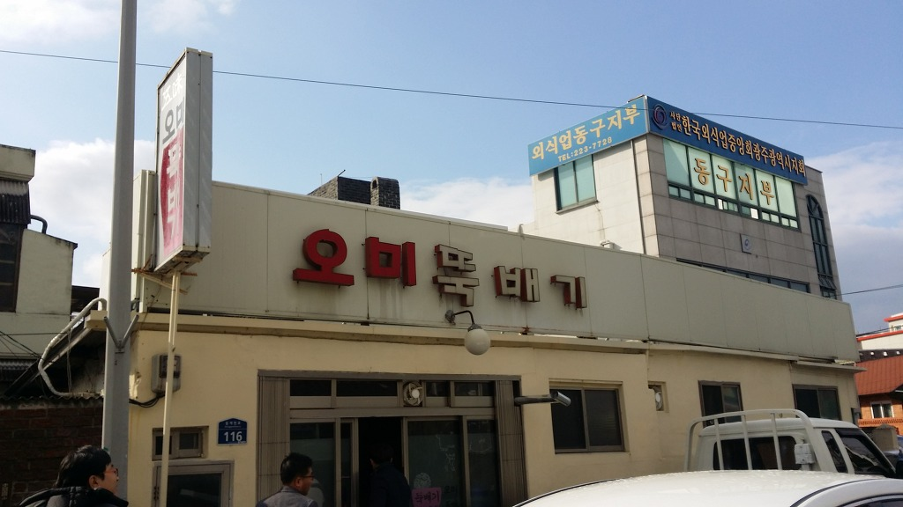
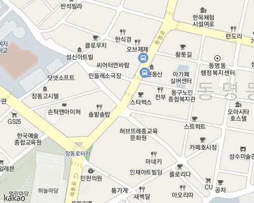
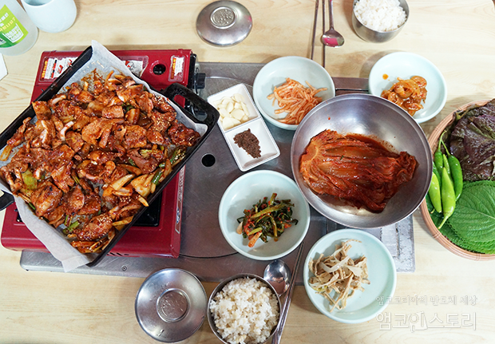
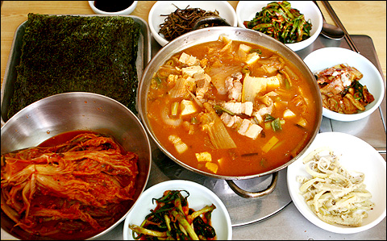

오미뚝배기

주소
광주광역시 동구 장동 137-1
메뉴
돼지불고기 14000원
추천메뉴. 많이 맵지 않고 달달한 맛

김치찌개 7000원
많이 먹어본듯한 묵은지 김치찌개의 맛
기타사항
가본 사람들의 말로는 가게 주인 할머니께서 일명 '욕쟁이 할머니' 스타일이셔서 그런 서비스를 싫어하는 사람이라면 주의가 필요하다고 한다. 메뉴가 많지 않고 건물 자체도 오래된 옛날 할머니집 같은 느낌이라서 그 분위기, 그리고 맛을 느끼고 싶다면 꼭 가보라고 추천 받은 맛집. 큰 장점중 하나는 조선대에서 그리 멀지 않은 곳에 위치하고 있다.